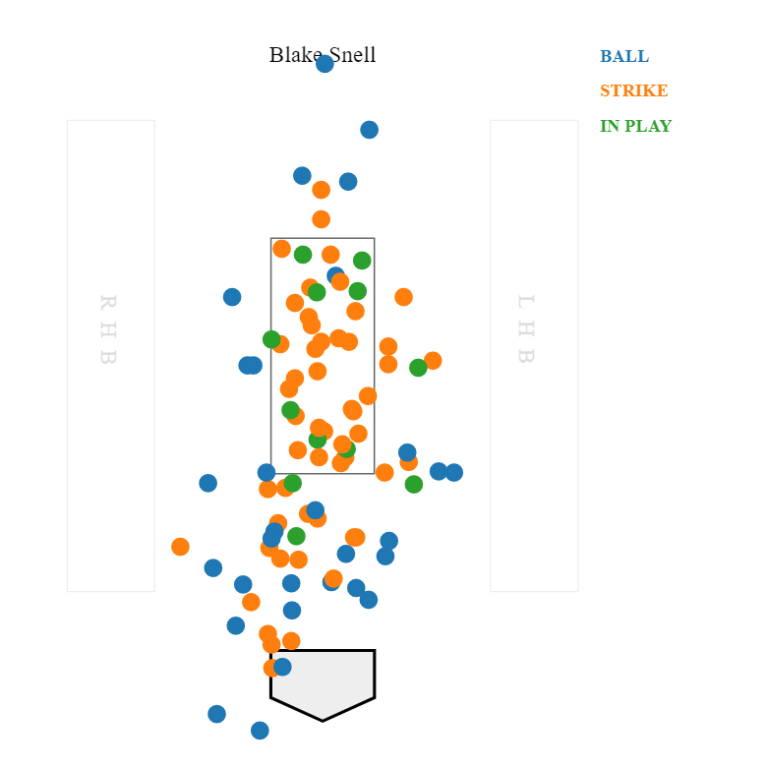

Tampa Bay Rays Pitcher Blake Snell is the latest victim to fall prey to analytics.
"Both good and bad. Analytic is good for baseball if you use it well. I think it gives more chances to the smaller market teams if they utilize the analytic. Bad, or less fun to be precise, if it goes extreme. The great Ichiro Suzuki told
Japanese media like this: Baseball is becoming more and more like the sport you don’t have to use your brain to play. And I might have to agree," said Daisuke Sugiura of Yahoo! Japan.
"Analytics is good and bad in my opinion," said Joe McDonald of New York Sportsday.
"There is value to it but it's not the end all be all."
As indicated by the graphics in the image shown above, Snell maintained command of his pitch velocity.
“To not look at the data is foolish, but to look at the data as having all the answers is even more foolish," said Tim Kurkjian of ESPN.